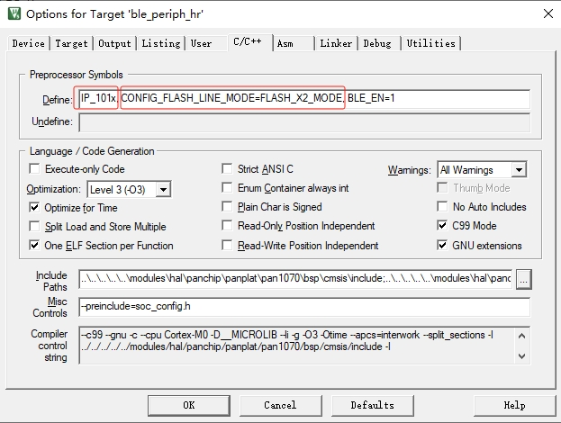
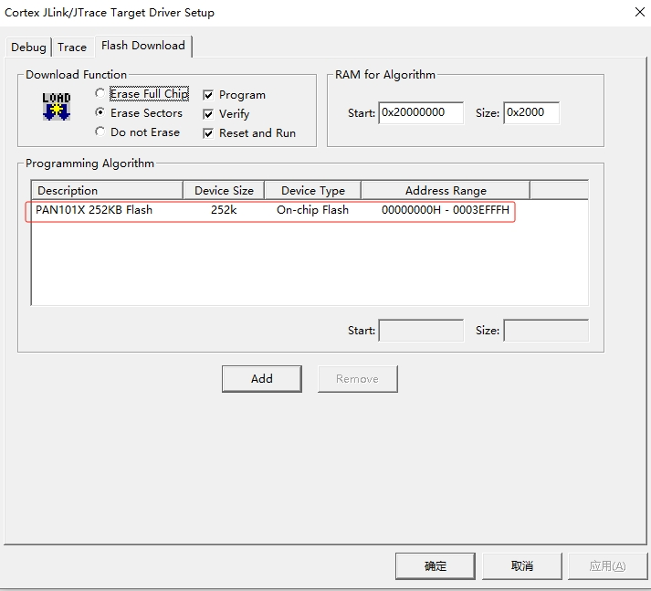
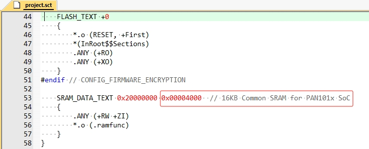

NDK PAN101x 工程移植指南¶
本文主要阐述 PAN107x 和 PAN101x 芯片的不同点以及 PAN107x 工程移植到 PAN101x 芯片的一般方法。
1. 芯片之间的差异¶
芯片系列 |
SRAM |
Flash |
BLE Feature |
DFU/OTA 支持情况 |
功耗 |
|---|---|---|---|---|---|
PAN101x |
16KB |
256KB |
支持 广播，从机 |
支持 2.4G OTA，USB DFU，UART DFU |
较低 |
PAN107x |
48KB |
512KB |
支持 广播，扫描，从机，主机 |
支持蓝牙 OTA，2.4G OTA，USB DFU，UART DFU |
极低 |
由于存储资源限制，PAN101x 系列芯片适用于单连接从机，且不带蓝牙OTA 的蓝牙应用方案（如IOT传感器）或者一些简单的非蓝牙应用方案（如 2.4G USB Dongle）。
PAN107x 系列芯片可以用于从机，主机，多连接的方案（2主3从），支持蓝牙 OTA
2. PAN101x 工程移植¶
SDK 中的大部分例程均基于 PAN107x 芯片进行演示，但实际上多数例程均可通过简单的改动支持 PAN101x。
2.1 Keil 工程配置¶
PAN101x 的 Keil 工程 C/C++ 配置如下：

PAN101x Keil 工程配置¶
其中 Define 一栏中：
PAN101x 芯片填入
IP_101x，PAN107x 芯片填入IP_107xPAN101x 芯片填入
CONFIG_FLASH_LINE_MODE=FLASH_X2_MODE，PAN107x 芯片填入CONFIG_FLASH_LINE_MODE=FLASH_X4_MODE
2.2 Keil Jlink Flash 烧录配置¶
PAN101x 的 Keil Jlink Flash 烧录配置如下：

PAN101x Keil Jlink Flash 烧录配置¶
其中 Flash 烧录算法 FLM 文件，PAN101x 芯片应选择 PAN101X 252KB Flash，PAN107x 芯片应选择 PAN107X 508KB Flash。
2.3 Keil Scatter File 链接脚本¶
PAN101x 的 Scatter File 链接脚本如下：

PAN101x Scatter File 链接脚本¶
其中 SRAM 大小配置，PAN101x 芯片应为 0x00004000，PAN107x 芯片应为 0x0000C000。
2.4 工程包含的蓝牙 Controller Lib¶
PAN107x 芯片选择 ble_spark_107x.lib 或者 ble_spark_107x_rd.lib
PAN101x 芯片选择 ble_spark_101x.lib
2.5 SDK Config 配置¶
PAN101x 工程与 PAN107x 工程的 sdk_config.h 文件差别也较大，其中包括 “Platform Config”、“RTOS Enable”、“BLE Enable”、“Flash/Image Config”、“Log UART Tx Pin” 等配置均有区别。
建议从已有 PAN101x 支持的工程中，直接拷贝一份 sdk_config.h 文件过来，然后基于此文件修改以适配当前移植的 PAN107x 工程。